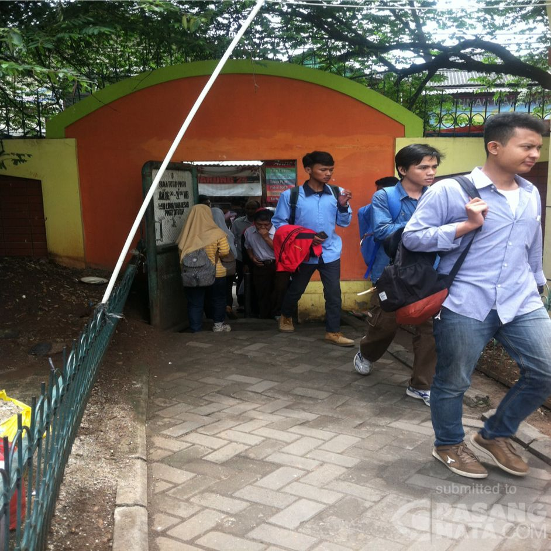
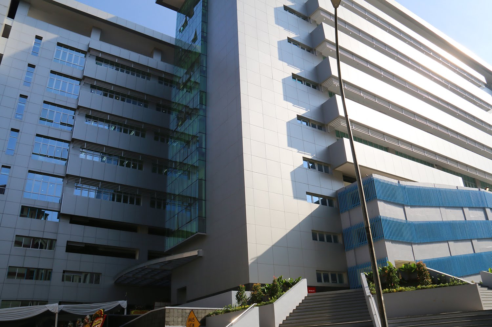

Suasana Study From Home


Fasilitas di UIN


Pintu Doraemon

Fakultas Sains dan Teknologi


Perpus UIN Jakarta
Fasilitas yang menarik
Fasilitas menarik menurut saya di UIN adalah pintu doraemon dikarenakan dengan melewati pintu itu kita dapat menikmati seluruh sajian yang dapat memuaskan dan mengenyangkan hawa nafsu kita setelah belajar dan mengerjakan tugas yang tiada akhirnya, namun saat corona ini datang kita sudah jarang merasakan hal tersebut.